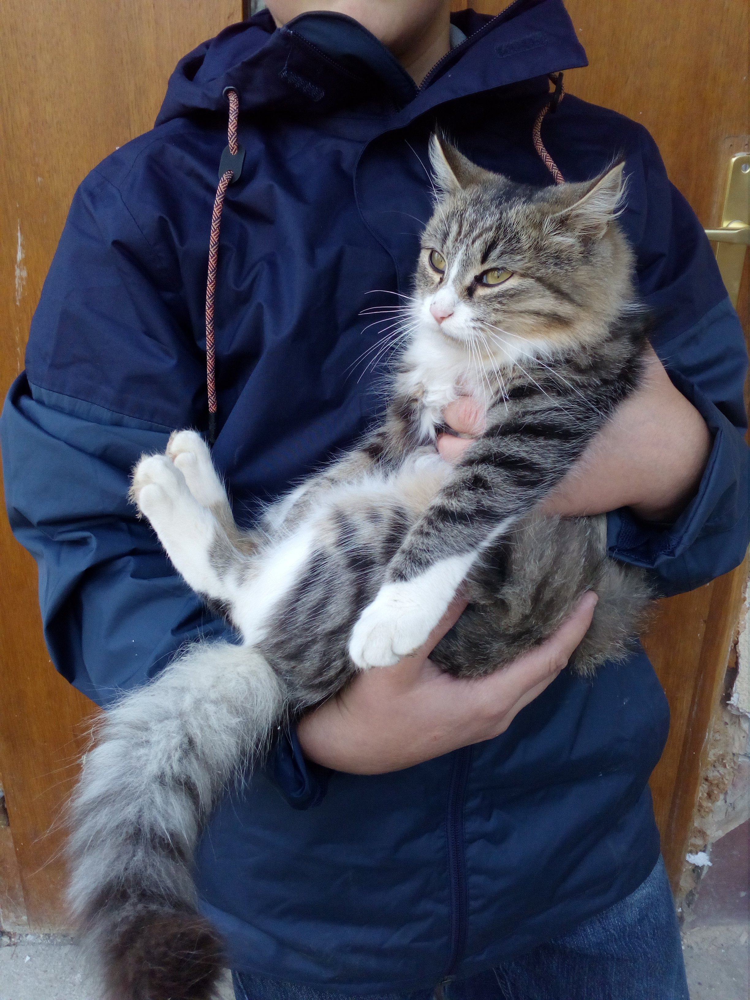
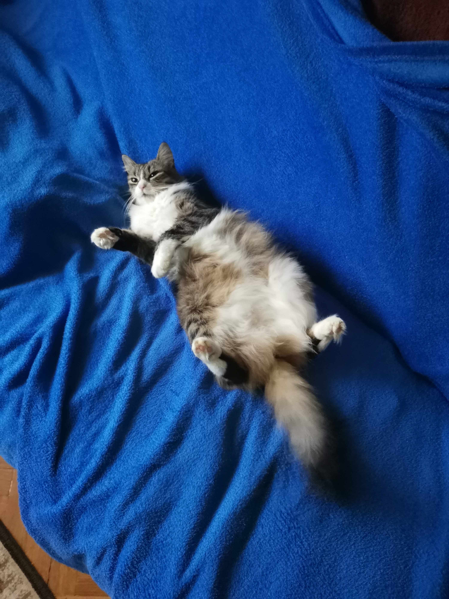

Nyunyó 2019 október 23.-án költözött önkényesen hozzánk.
Első alkalommal még csak kaját
jött csórni
hozzánk, akkor még megette a rakott káposztát. Elősször a kamrába szállásoltuk el
ahonnan minden reggel kiengedtek és minden este meg be.
Másfél évig lakott kinn a szabadban, amíg el nem szakad a bal lábánál a comb szalagja. Ekkor
ugyanis megműtettük és többé nem engedtük ki a szabadba, a mai napig benn él a lakásban.
Azóta 2 hetente fürdedjük is.
Sokszor van este, hogy a gáz konvektorokon alszik este, mert meleg, vagy bebújik az ember
mellé. Minden reggel és este követeli az ennivalóját és jelzi, hogyha végzett a WC-vel.

Nyunyó a kezemben első évében

Nyunyó az ágyamon
|
2019 |
2020 |
2021 |
2022 |
|---|---|---|---|
|
1,5 kg |
2 kg |
3,2 kg |
4,1 kg |